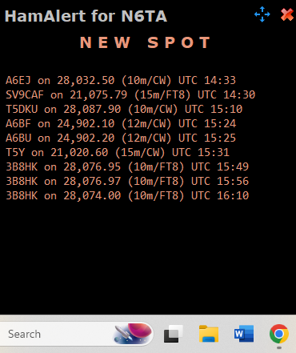

They have a good iPhone application as well...
73, and thanks, Dave (NK7Z) https://www.nk7z.net ARRL Volunteer Examiner ARRL Technical Specialist, RFI ARRL Asst. Director, NW Division, Technical Resources My favorite definition of an intellectual: 'Someone who has been educated beyond his/her intelligence'. Arthur C Clarke_______________________________________________On 10/4/24 09:15, Al N6TA via Chat wrote:
I recently mentioned this program that will provide a pop up on your shack computer telling you that a 'need' has been 'spotted'. Below is an example which shows some good and some bad. I have not investigated why the bad info gets through but it does reflect slots I need.the A6 spots are all wrong but maybe there is an A6 on the band. A6QQ was on 12 FT8 but none of these match that. the T5 is typical of a bad spot that I get daily.YMMV.Al N6TA
_______________________________________________ Chat mailing list Chat@ncdxc.org http://mail.ncdxc.org/mailman/listinfo/chat_ncdxc.org
Chat mailing list
Chat@ncdxc.org
http://mail.ncdxc.org/mailman/listinfo/chat_ncdxc.org